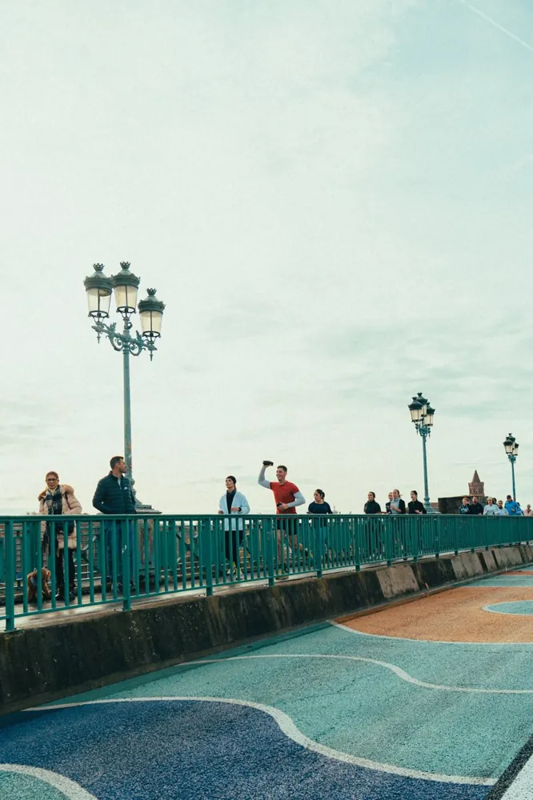
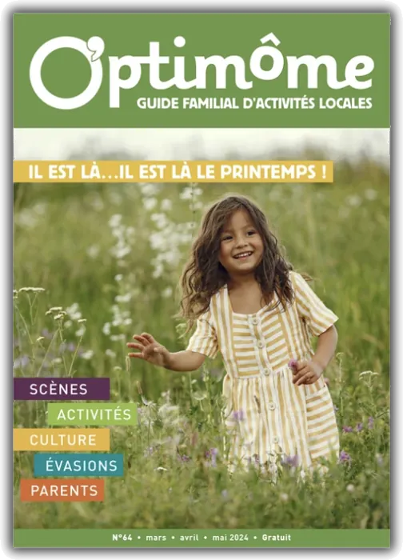

Cloé
Pérot
Chargée de communication. Je fais vivre les marques sur les réseaux, en print et sur le terrain, de l'idée au visuel.
Basée à Toulouse, ouverte aux Pyrénées. Disponible pour un CDI.

Ce que je sais faire
- Social media
- Identité visuelle
- Influence & affiliation
- Emailing
- Rédaction web
- Direction artistique
- Partenariats
- LinkedIn & ghostwriting
- Événementiel
- Com interne
- Visuels produit & IA
Mes expériences
Sept. 2024 – sept. 2026 · alternance
Vancore
chargée de com & marketing
Un e-commerce d'équipement pour aménager son van. J'y ai accompagné le passage de Mon Fourgon Shop à Vancore, et touché à tout : réseaux, influence, newsletters, print, LinkedIn.
x2abonnés Instagram, de 3 000 à 6 002
Voir le projet
2024 – 2026 · bénévole
Toulouse Social Run
com & identité visuelle
Un club de course gratuit né d'un projet d'école, devenu association. J'ai créé son identité, ses visuels et sa com, jusqu'aux runs avec les marques partenaires.
3 → 50coureurs en moyenne par run, plus de 110 sur les gros événements
Voir le projet
Sept. 2023 – sept. 2024 · alternance
Community manager
ma première alternance
Trois médias toulousains à faire vivre en même temps : De Fil en Déco, O'ptimôme et CFM Radio. Réseaux sociaux, contenus et pubs print.
Voir le projet
